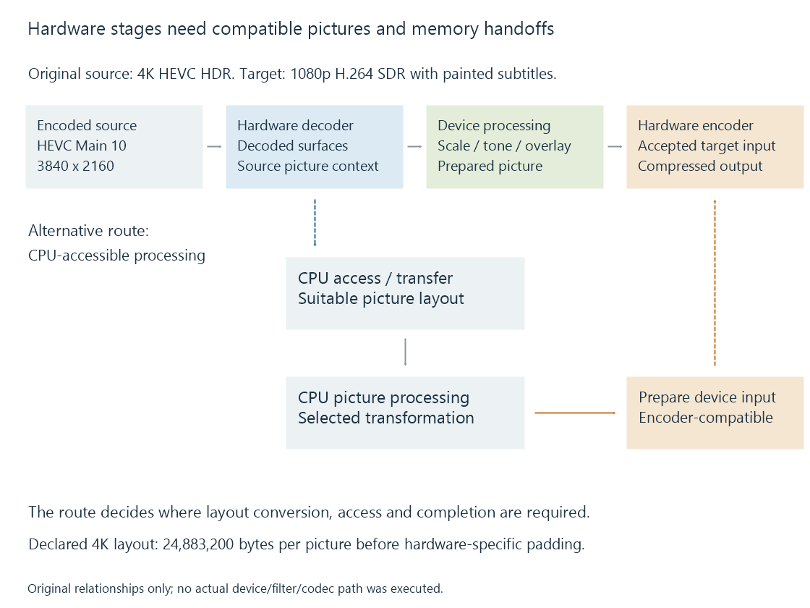

The hardware decode-filter-encode pipeline
A hardware video pipeline connects encoded input, decoded surfaces, picture transformations and encoded output through compatible devices, memory formats and completion dependencies.
A hardware video pipeline must connect the output of each stage to a usable input for the next. Finding a decoder and encoder is only the beginning: picture layout, memory location, device context, transformations and timing also have to fit.
This is the hardware view of the broader transcoding pipeline. Its central objects are compressed packets at the ends and decoded picture surfaces between the stages.
Define the source and target first
Imagine an original conversion exercise:
- Source: 3840 × 2160 HEVC Main 10, HDR, 4:2:0.
- Target: 1920 × 1080 H.264, SDR, 8-bit 4:2:0.
- Selected subtitle: must be painted into the delivered video.
The decoder reconstructs the source picture. Scaling changes its spatial size; tone mapping prepares the intended SDR relationship; subtitle composition adds the selected presentation. The encoder creates the target compressed video.
A successful decode query addresses the source configuration. A successful encode query addresses the target. Neither query, alone, establishes the transformations and handoffs between them.

Compressed packets become picture surfaces
The decoder consumes codec data and produces reconstructed picture information. A hardware path commonly represents that output through device-associated surfaces.
A surface carries or refers to storage with a defined picture layout. The consumer needs to know dimensions, format, planes, row pitch and memory context, alongside the media's timing and colour interpretation.
For an original ideal, unpadded 4K 4:2:0 layout whose samples occupy sixteen-bit storage:
3840 × 2160 × 1.5 samples per pixel × 2 bytes per sample
= 24,883,200 bytes per picture
A ten-bit sample occupying sixteen-bit storage still has ten bits of image precision. Storage size and precision describe different properties.
The original 1080p 8-bit 4:2:0 target layout needs 1920 × 1080 × 1.5 = 3,110,400 bytes per picture before padding. Spatial scaling and storage conversion both contribute to that difference.
Actual hardware surfaces can have alignment, tiling, compression and additional allocation requirements. The arithmetic explains data scale without assigning an allocation size to a specific driver.
The filter needs a usable input
A GPU filter may accept surfaces from one hardware context and require particular formats. Another filter may operate on CPU-accessible frames.
In the example, a picture-sized subtitle operation might be available through the selected device path, or the application might use a CPU renderer. In the latter case, the application needs a suitable transfer or mapping arrangement for the frame, performs the composition and prepares the next stage's required input.
| Handoff | Requirement |
|---|---|
| Decoder to device filter | Accepted surface format, context and completion state |
| Device to CPU filter | CPU-usable layout and the needed data access |
| CPU result to hardware encoder | Accepted input layout and device-accessible storage |
| Device filter to encoder | Compatible processed surface and ownership/timing |
The implemented route decides which handoffs occur. The same named hardware decoder can feed different filters in two sessions.
Operation order matters as well. Painting an overlay before scaling scales the painted overlay with the picture. Painting it after scaling uses destination-picture coordinates. Hardware execution does not remove that relationship.
Frame traffic is larger than the delivery bitrate
The declared 4K layout above, at thirty pictures per second, represents:
24,883,200 × 30 = 746,496,000 bytes per second
If a model downloads every complete picture to CPU-accessible memory and uploads an equally sized result, the two transfer payloads total:
746,496,000 × 2 = 1,492,992,000 bytes per second
For comparison, a compressed source averaging 20 Mbit/s carries 2,500,000 bytes per second before overhead. Its compressed delivery rate is not the rate of full-picture traffic.
The transfer model deliberately assumes the same picture size both ways. A route that scales before transfer, changes layout or shares suitable storage has different traffic. The point is to calculate the route actually being discussed.
Completion and reuse are different permissions
Submitting a decode operation can return before the picture is ready. A filter must wait for the producer's relevant completion before reading it.
The consumer can then continue using the surface after decoding has finished. Reusing that storage for a new picture too early can overwrite a reference, a filter input or an encoder input.
An original ownership timeline makes this visible:
| Model event | Time | Permission established |
|---|---|---|
| Decoder finishes writing surface A | 4 ms | Consumer may read the finished picture |
| Filter finishes reading A and writing B | 7 ms | Its use of A can end |
| Encoder finishes consuming B | 12 ms | Its use of B can end |
The example does not claim those are device timings. It separates producer completion from completion of all downstream uses.
Codec references create another reason to retain a decoded surface. A picture can remain useful for reconstructing later pictures even after it has been displayed or passed to an encoder. Pool ownership must account for those references.
Overlap changes the throughput calculation
Independent stages can work on different pictures at once. Their single-picture service times add for a serial route, while a well-filled overlapped pipeline has a different steady-state throughput limit.
With original stage costs of 3 ms decode, 8 ms filter and 5 ms encode, serial service is sixteen milliseconds. Under an ideal independent-overlap model, the eight-millisecond filter stage limits the filled pipeline to 125 pictures per second.
That model omits transfer, synchronization, startup, queues and shared-device contention. It is useful for locating the limit implied by its assumptions, rather than reporting a hardware benchmark.
First output and filled-pipeline progress
Use the same declared 3/8/5-millisecond stage costs, with four pictures already available and one worker per independent stage. Each later stage starts only when its input is ready and its own previous job has finished.
| Picture | Decode interval | Filter interval | Encode interval | Encoded output ready |
|---|---|---|---|---|
| A | 0–3 ms | 3–11 ms | 11–16 ms | 16 ms |
| B | 3–6 ms | 11–19 ms | 19–24 ms | 24 ms |
| C | 6–9 ms | 19–27 ms | 27–32 ms | 32 ms |
| D | 9–12 ms | 27–35 ms | 35–40 ms | 40 ms |
The first picture needs sixteen milliseconds through all three stages. Once work fills the route, subsequent outputs arrive eight milliseconds apart because the filter controls the available processing slots.
The decode worker can finish C before the filter has finished B. That result needs retained storage while it waits. More asynchronous work therefore introduces queue and ownership requirements as well as potential overlap.
If input pictures arrive more slowly, or stages share an execution resource, this modeled schedule changes. Its distinction between first-output latency and filled-pipeline progress remains useful when interpreting the corresponding observed quantities.
See Also
- Hardware decoding and software decoding
- Hardware encoding and software encoding
- GPU compute and video processing
- How media APIs connect applications to hardware
- DRM PRIME and DMA-BUF frame sharing
- How a transcoding pipeline works
- Media filter graphs